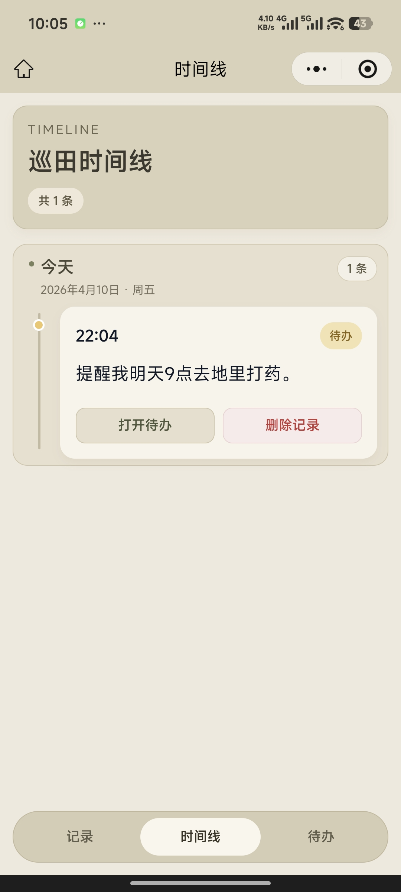
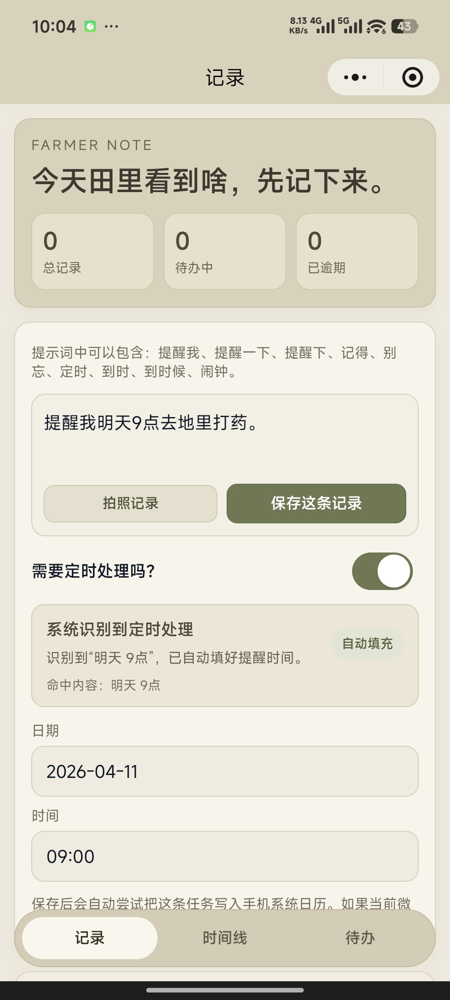
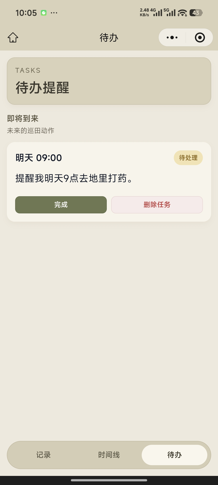

记录
两行文字就能落下一条田间观察，避免因为在地头手忙脚乱而错过细节。
记录田间变化，让好线索留在云端
初芽巡田 FarmerNote 为农事巡查做了更轻的记录入口：两行文字、现场照片、提醒时间和后续待办，会被整理成一条清楚的时间线，并在你登录同一个账号后跨端同步。



Download
选择适合您的平台，立即开始更轻松、更敏捷的农事记录。
扫码下载 Android 安装包
微信扫一扫，即开即用
iOS 版本正在开发中，敬请期待
Core Product
我们没有把 FarmerNote 做成泛任务工具，而是把“现场发现问题、记下来、约个时间回来处理、回头能查到”这条链路压到更短。
两行文字就能落下一条田间观察，避免因为在地头手忙脚乱而错过细节。
同一条记录可附带现场照片，云端开启后会跟随记录一起同步到同账号设备。
识别“下午三点再去看”“别忘了补看”等自然语言，自动生成待办与提醒时间。
已处理、逾期、完成和纯记录会回到统一时间线里，方便复盘每一次巡查。
Scenes
FarmerNote 适合用在真正站在田里的那一刻，不要求你先整理模板，也不需要先想清楚分类。
麦苗偏黄、沟边积水、某一块地出苗稀，这些观察先记，别等回到屋里再凭印象补。
对需要“过几小时再看”“明早复查”的问题，直接把下一次处理时间写进记录里。
登录同一个云端账号后，小程序和 Flutter 客户端会命中同一个业务账号，记录、待办和图片保持一致。
Data Security
我们深知农业数据的重要性，在设计之初就为您提供了可靠的安全保障机制。
我们向每位用户提供公开、透明的服务准则，可随时查阅：
About Us
回归最朴素的需求，做真实好用的农事记录工具。
初芽巡田 FarmerNote 是由我和团队共同打造的一款轻量级应用。在常年接触真实农业一线的过程中，我们深切地体会到，地头的实操往往并不需要花哨复杂的功能系统。很多时候，农业现场管理者真正需要的，是在发现问题的那一刻，能有一个趁手的工具立刻记下几行字、拍张照、定个复查时间。
市面上的许多应用由于过度追求大而全，反而使这一最基础的记录动作变得沉重。因此，我们决定自己动手开发“初芽巡田”。我们摒弃了冗余的业务模块，专注于“现场发现—记录—待办—回溯”这一核心闭环。我们致力于提供一个克制、极简且无缝跨越多个客户端的应用，帮助每一位种植团队成员把每次巡田的见闻稳稳落到实处，提升管理效率并减少信息遗漏。
我们的团队是一群热爱农业、钻研技术且信仰“化繁为简”的实干者。目前，初芽巡田仍在持续打磨与迭代之中。如果您同样关注农业现场的数字化落地，无论是擅长前端开发、后端架构、产品设计，还是对农业现场管理拥有独到经验，只要您认同我们“用技术解决一线真实痛点”的理念，我们都诚挚地期待您建立联系。让我们携手同行，将真正好用的系统带到田间地头。
FAQ
这里汇总了初芽巡田在使用过程中大家最常问到的几个问题。
不会。未登录时，记录、待办和照片仍然保存在本机；只有在你登录同一个云端账号后，新的记录才会加入云同步队列。
两端都支持微信登录与手机号验证码登录。服务端会把微信身份和已验证手机号挂到同一个业务账号下，只认同一个 `farmer_users.id`。
提交注销后，当前会话会立即失效，账号进入 15 天待删除窗口；冷静期结束后，云端账号、身份绑定、记录、待办和媒体对象会被彻底删除。